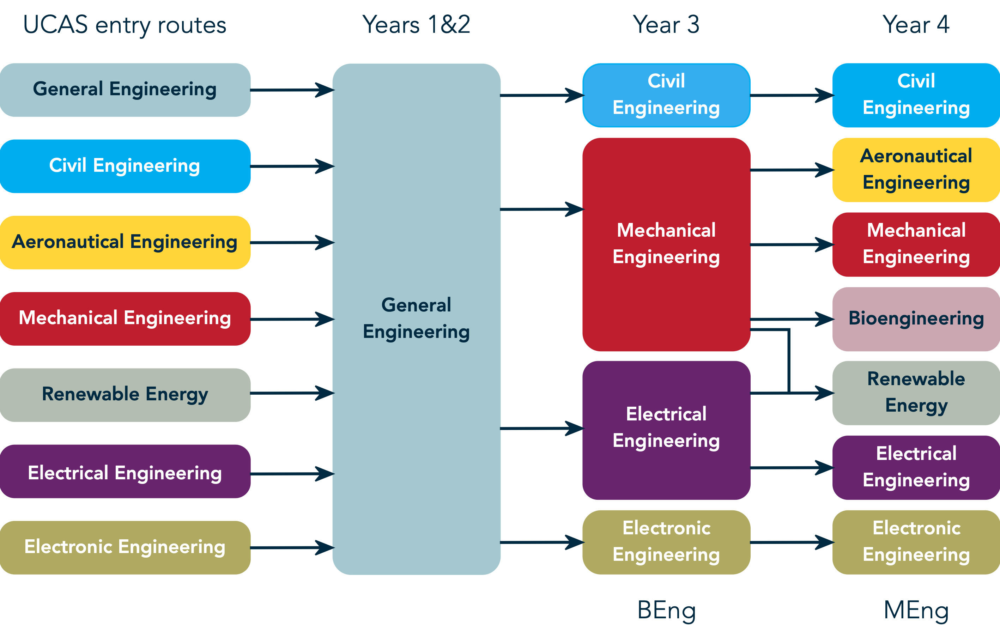
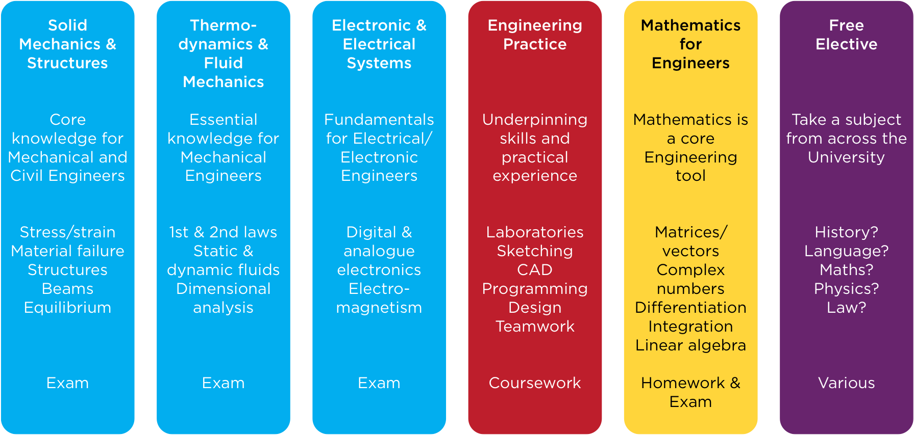
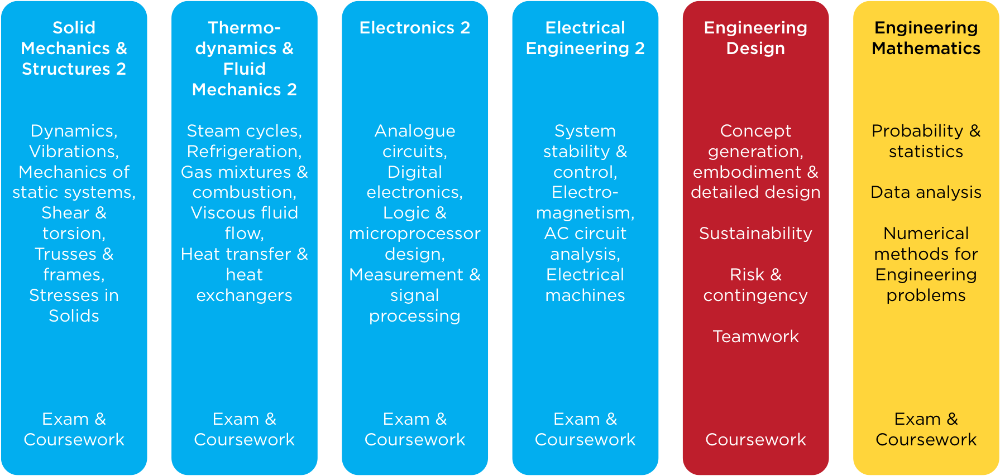

General Engineering at University of Durham
As part of the Russell Group of leading research-intensive universities, Durham University has a longstanding and powerful commitment to research and research-led teaching. It is recognised as one of the leading centres of research in Engineering in the world. Their research covers a wide range of topics, and they encourage interdisciplinary research within the Department as well as national and international cooperation.
The degree programmes are accredited by the Professional Engineering Institutions on behalf of the Engineering Council. The BEng programmes partially satisfy the educational base for a Chartered Engineer (CEng), and will fully meet the requirement when complemented with accredited Further Learning.

1st Year Engineering
1st Year Engineering The first year of the Engineering course is designed to teach you core engineering knowledge across Civil, Mechanical, Electronic and Electrical Engineering as well as to equip you with essential mathematics tools that you will use to solve your engineering problems. You will also get hands-on experience through weekly laboratories and an intensive practical engineering skills course at the end of the academic year. Our first year is split into six modules: three on engineering theory, one on practical engineering skills/design, one on mathematics plus a free elective module from across the University. One of the engineering theory modules is focused on Solid Mechanics and Structures, where are students learn about stress, strain and failure of engineering materials as well as understanding structural actions and the behavior of beams. The Thermodynamics and Fluid Mechanics module focused on the behavior of fluids in static and dynamic situations as well as how the fundamental laws of thermodynamics can be applied to engineering problems. The final engineering theory module is focused on electromagnetism, core knowledge for understanding electrical machines, as well as analogue and digital electronics. The Engineering Practice module will develop your practical skills via weekly laboratories that are designed to reinforce the taught content. You will also be taught how to use Computer Aided Design (CAD) to design engineering components, control microprocessors and implement your scientific knowledge into computer code, and sharpen your sketching skills to help you communicate your engineering ideas and solutions.

2nd Year Engineering
As with the first year, in the second year of Durham’s General Engineering course you will learn about all of the core engineering disciplines of Mechanical, Civil, Electrical and Electronic Engineering. This is reflected in the second-year models, with one module aligned to each of these areas. The Solid Mechanics & Structures 2 module will build on the first-year content, strengthening students’ knowledge of the mechanics of materials and structures and inducing dynamics. The Thermodynamics & Fluid Mechanics 2 content explores more advanced topics, such as combustion and viscous fluid flow, whereas Electronics and Electrical Engineering are each the focus of a full module. The engineering modules are supported by an Engineering Mathematics module where students improve their understanding of probability and data analysis as well as different numerical tools that can be used to analyze Engineering problems. In addition to lecture content, students will learn how to implement more complex routines on microcontrollers. They will also enhance their technical writing skills through formally-assessed laboratory reports and work in teams to solve challenging engineering problems guided by industry professionals as part of the Engineering Design module.
